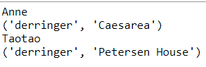

היי
הצלחתי להכניס לתוך הפונקציה של בדיקת ראיות את הנשק והמיקום,
אבל לא מצליחה להחזיר את השם של החשוד.
אשמח לעזרה 

היי
הצלחתי להכניס לתוך הפונקציה של בדיקת ראיות את הנשק והמיקום,
אבל לא מצליחה להחזיר את השם של החשוד.
אשמח לעזרה
היי שירז,
האם את מצליחה נגיד בתוך הפונקציה להדפיס שם של מישהו מתוך המילון ?
(נגיד בלי קשר לאם הוא חשוד או לא)
אני מצליחה להדפיס באופן הזה (גם שם וגם את הראיות)

אז בעצם כל שנשאר לך לבדוק זה אם הראיות זהות מה שמחפשים ולהחזיר את השם.
הצלחתי עכשיו להדפיס את השמות , עשיתי תנאי שאם בדיקת הראיות נכונה שיחזיר לי את השם.
אבל במקרה והיו שני חשודים במקום אחד, הוא היה מחזיר לי רק חשוד אחד (בגלל הreturn)
ולא בטוחה איך לשפר שאם נגיד יש שני חשודים שיחזיר שניים ?
ביקשו ‘להדפיס’ את שמות החשודים ולא להחזיר
נכון אבל ביניתי פונקציה אני יכולה לעשות בלי פונקציה ?
פונקציה לא ‘חייבת’ להחזיר ערך מסויים -
ואם את מתעקשת - בסוף הפונקציה את יכולה להחזיר return ריק
או return None
בעיקרון אם אני עושה רק הדפסה אז הפונקציה מחזירה לי גם None .
אם אני מנסה לעשות גם return ריק הוא מחזיר לי עדיין אותו דבר .
את עושה את הreturn מחוץ ללולאה? בהזחה אחת?
אני עושה את return מחוץ ללואה הראשית (וכמובן בהזחה אחת שיהיה בתוך פונקציה)
בלי return או עם return ריק כל פונקציה אמורה להחזיר None 
היי לכולם:)
אשמח לעזרה בתרגיל הנל
לא ככ ברור לי איך משתמשים בunpacking הבנתי שאי אפשר לעשות לזה השמה למשתנה חדש (כי קיבלתי שגיאות) ובאופן רעיוני יש לי כיוון לפתירת התרגיל אך אני מרגישה שלא הבנתי את המחברת עד הסוף וקצת מעורפל לי איך שהתרגיל אמור להתבצע , אשמח לעוד הסברון על הנושא ועל הדרכים שבהן אפשרי להשתמש בunpacking
תודה!!
בגדול אתה צריך להגיע למצב שאתה יודע לומר מי הם כל הסטודנטים אשר חשודים (כלומר הנשק והמקום שלהם זהה
למה שהמשטרה כבר יודעת)
אתה לגמרי יכול לעשות השמה עם unpacking כפי שהוספר במחברות למשל
x,y = 1,2
בדוגמא הזו למשל x יקבל 1 וy יקבל 2.
זה עובד אותו הדבר בלולאות וכו.
דנה, גם אני בהתחלה הסתבכתי עם המחברת הזו.
אני מאוד ממליצה לך להתחרע על התרגיל באנפקינג, זה ממש עוזר לחומר לחלחל.
גם אני הרגשתי לא משהו עם המחברת ואיך היא באה לידי ביטוי במילונים.
לכן, מה שעשיתי בתור התחלה זה להעתיק את הקונספט שהוצג בדוגמה “unpacking לארגומנטים לפי שם הארגומנט” (החלק עם ה- **) לתרגיל, ולראות איך הוא בא לידי ביטוי בתרגיל (ע"י הדפסות של כל מיני משתנים). כשראיתי מה התוצאה, נהיה הרבה יותר קל להבין מתי להשתמש בפונקציה הנתונה (שבודקת את הנשק והמיקום).
מקווה שזה עוזר…